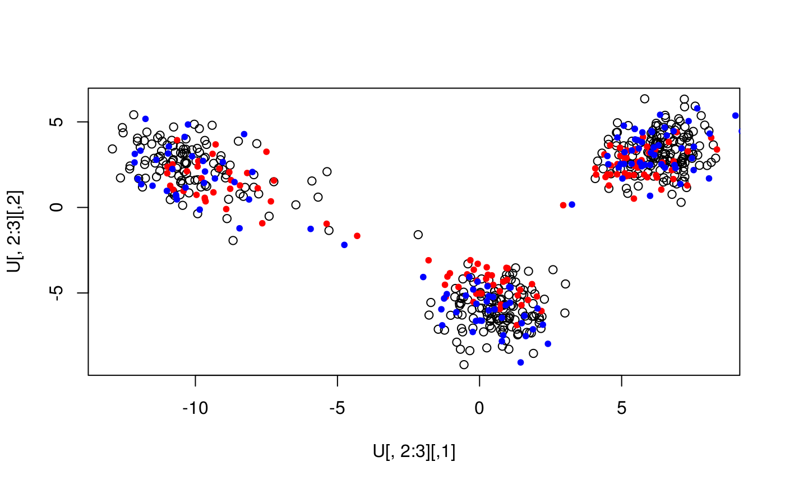

Adjusts the shrinkage bias in the predicted PC scores based on the estimated shrinkage factors.
pca_adjust(test.scores, train.eval, p, n = length(train.eval), method = c("d.gsp", "l.gsp", "osp"), n.spikes = pca_nspike(train.eval))
| test.scores | An \(m\times k\) matrix or data frame containing the first \(k\) predicted PC scores of \(m\) many test samples. |
|---|---|
| train.eval | Numeric vector containing the sample eigenvalues. The vector must have dimension |
| p | The number of features. |
| n | The number of training samples. |
| method | String specifying the estimation method. Possible values are " |
| n.spikes | Number of distant spikes in the population (Optional). |
A matrix containing the bias-adjusted PC scores.
The dimension of the matrix is the same as the dimension of test.scores.
Also, an attribute attr(*, "shrinkage") containing the shrinkage factors.
Note that the number of shrinkage factors can be smaller than the number of
columns of test.scores; it corresponds to the estimated number of spikes.
The different choices for method are:
"d.gsp": \(d\)-estimation method based on the Generalized Spiked Population (GSP) model.
"l.gsp": \(\lambda\)-estimation method based on the GSP model.
"osp": Estimation method based on the Ordinary Spiked Population (OSP) model.
The \((i,j)^{th}\) element of test.scores should denote the \(j^{th}\) predicted PC score for the \(i^{th}\) subject in the test sample.
At least one of n.spikes and n.spikes.max must be provided. If n.spikes is provided then n.spikes.max is ignored, else n.spikes.max is used to find out the number of distant spikes using select.nspike.
The argument nonspikes.out is ignored if method="d.gsp" or "osp".
The argument smooth is useful when the user assumes the population spectral distribution to be continuous.
Dey, R. and Lee, S. (2019). Asymptotic properties of principal component analysis and shrinkage-bias adjustment under the generalized spiked population model. Journal of Multivariate Analysis, Vol 173, 145-164.
X <- readRDS(system.file("testdata", "three-pops.rds", package = "bigutilsr")) N <- 400; M <- ncol(X) ind <- sample(nrow(X), N) # Compute SVD using one part of samples svd <- svd(X[ind, ]) U <- sweep(svd$u, 2, svd$d, '*') plot(U[, 2:3])# Projecting other samples U1 <- X[-ind, ] %*% svd$v points(U1[, 2:3], col = "red", pch = 20) # shrunk towards 0#> [1] 0.9995400 0.9052457 0.7594750 0.4936291